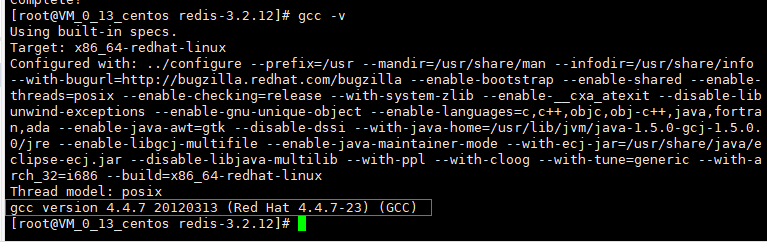

Redis官网
https://redis.io/
安装版本说明
本次安装的Redis版本为3.2.12
安装前的准备
安装Redis之前必须先安装gcc编译环境：
先检查是否已经安装过gcc，敲入命令：gcc -v 如果出现如下信息则说明已经安装过gcc了

如果没有安装，则敲入命令yum -y install gcc gcc-c++来进行安装
第一步：下载Redis
下载Redis有两种方法：
第一种方法：在官网上直接下载tar.gz包，然后上传到linux服务器中
第二种方法：直接在linux服务器中通过wget命令下载tar.gz包到服务器（如：wget http://download.redis.io/releases/redis-3.2.12.tar.gz）
第二步：把下载好的tar.gz文件放到/opt路径下，解压缩，并进入到解压后的redis文件目录
运行以下两条命令：
解压：tar zxvf redis-3.2.12.tar.gz
进入到Redis目录：cd redis-3.2.12
第三步：编译
运行编译命令：make
第四步：安装
运行编译命令：make install
补充说明
如果只是编译（make）而没有安装（make install）的话也是可以的，可以在redis根目录->src下找到redis-server等可执行文件来启动redis
如果编译（make）并且安装（make install）了的话，除了可以在redis根目录->src下找到redis-server等可执行文件来启动redis之外，还可以在/usr/local/bin找到可执行文件（比较方便）